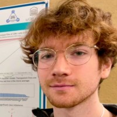

Noah Mitchell
Machine learning researcher
I work on a central question: how can we make learning systems better
at solving difficult problems?
Email
GitHub
LinkedIn
Research
Amortizing Search Under Inference Budgets for LLM Reasoning
Noah Mitchell · Preprint
A learned verifier-guided search controller for inference-time reasoning
that improves hard-task solve rates while reducing inference compute.
Paper
Building State vs. Using State: Representation and Utilization in Multi-Step Tasks
Noah Mitchell · Preprint
Task-agnostic methods that improve learned-state utilization in language
models and reinforcement-learning agents on multi-step tasks.
Paper
The Cost of Absolute Position: A Spread–Expressivity Tradeoff in Transformers
Noah Mitchell*, Isaac Gabriel*, Alexander Wyatt* · Equal contribution · Accepted at NeurIPS 2026
A study of transformer expressivity and positional information, with
GPT-2-style experiments scaling to 1.2B parameters on WikiText using
PyTorch DDP and H100 GPUs.
Paper
Experience
Machine Learning Engineer Intern
Tower Research Capital · Montréal
May–Sep 2026
- Designed and evaluated autonomous LLM data agents for subject-matter experts, automating data discovery and reducing a multi-year backlog; built Python and SQL data-processing and retrieval workflows using NumPy and pandas.
- Developed agentic quantitative-research pipelines to mine data sources, propose candidate signals, and validate hypotheses; trained deep-learning models on market features with reproducible evaluation.
NSERC Researcher
University of Ottawa
Dec 2024–May 2026
- Co-developed Margin-Aware Quantization, an adversarial-robustness method with a high-probability condition; improved ResNet PGD robustness from 92% to 97% at 99% clean accuracy on MNIST and extended experiments to CIFAR-10.
- Ran distributed PyTorch DDP training, ablations, and hyperparameter sweeps on Linux and Slurm HPC clusters with multi-node H100 GPUs, using reproducible configurations and experiment tracking.
Machine Learning Research Intern
Kinaxis
Sep–Dec 2024
- Trained a policy-gradient reinforcement-learning agent for supply-chain graph partitioning, reducing downstream optimization solver time by 33%.
- Evaluated reward functions, graph features, and rollout strategies; improved preprocessing runtime by 91% through algorithmic optimization.
Software Developer Intern
Emids
Jun–Sep 2024
- Built an autonomous LLM agent that generates, tests, and refines SQL queries for natural-language data retrieval, reducing complex-query errors by 80%.
Selected Research Projects
Commitment and Revision Circuits in Diffusion Language Models
PyTorch · sparse autoencoders · LLaDA/Dream
Investigated diffusion-language-model token commitment and revision using
mechanistic interpretability, sparse autoencoders, hidden-state analysis,
and causal interventions; evaluated decoding policies.
Decision-Preserving World-Model Compression
Planning · reinforcement learning
Developed compact world-model representations that preserved near-full
planning performance with approximately one percent of the original state space.
Writeup
Award
Hack the North Sponsor Prize · 2024
Built an LLM, vector-database, and AlphaFold application for
natural-language gene-sequence generation and verification.
About
I am completing an Honours Bachelor of Mathematics at the University of
Ottawa, expected in May 2027, with a 3.8/4.0 GPA. I received the Victor
Linis Mathematics Scholarship and an NSERC USRA research grant. My research
combines theory and experiment across deep learning, reinforcement learning,
optimization, and large-scale empirical systems.
Relevant coursework includes mathematical machine learning, probability,
statistics, time-series analysis, linear algebra, algorithms, and operating systems.